Magnet collection file
Procedure
- Helium vent pipe and Ventglas figures
Figure 1. Helium vent kit parts and assembly
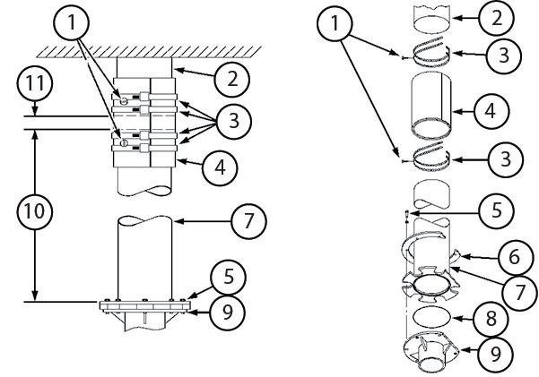
1 No. 10 - 16 x 1.0 inch screws (2) 2 Ceiling vent pipe and RF penetration waveguide 3 Hose clamps (4) 4 Ventglas fiberglass connector sleeve, 80.00 x 8.00 inches (2032 x 203.2 mm) 5 0.375 - 16 x 1.75 inch cap screws (6) and 0.375 inch washers (6) 6 Clamp ring 7 Vent pipe 8 Vent adapter O-ring 9 Vent adapter flange 10 24.00 inches (609.6 mm) 11 1.00 ± 0.25 inches (25 ± 6 mm) gap Figure 2. Ventglas attachments on the vent pipes
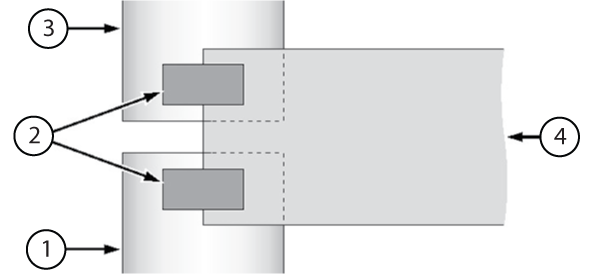
1 Magnet vent pipe 2 Duct tape 3 Ceiling vent pipe 4 Ventglas fiberglass connector sleeve, 80.00 x 8.00 inches (2032 x 203.2 mm) - Dale 600/600E Safety Analyzer
-
- At the patient monitor accessory panel, connect the patient lead cable and the cardiac lead set at the ECG connector.
- Replacing a burst disc
- Locate the helium compressor panel for your system (F50SH, F-50, or CSW-71).
Figure 3. F50SH compressor unit, front view
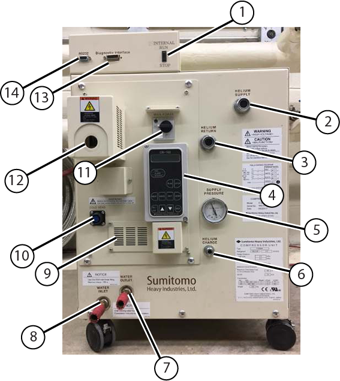
1 Run/Stop switch 2 Helium supply 3 Helium return 4 Operation panel unit (OPU) 5 Pressure gauge (supply) 6 Helium charge port 7 Water outlet 8 Water inlet 9 Voltage tap 10 Coldhead power line 11 Main power switch 12 Compressor power cable 13 Diagnostic interface (MM3) 14 RS232C (MM4) Figure 4. F-50 helium compressor unit, front view
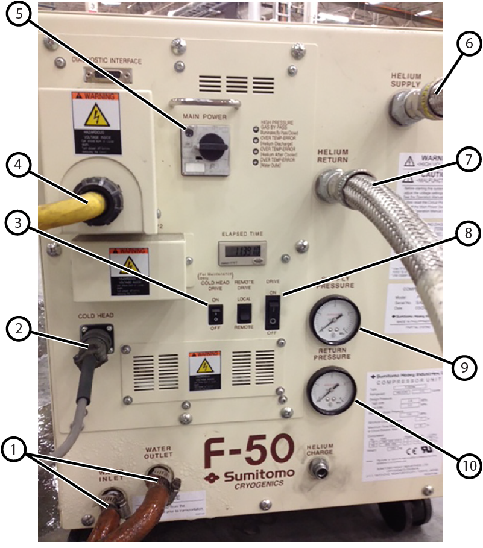
1 Water lines 2 Coldhead power line 3 Coldhead drive switch 4 Compressor power line 5 Main power switch 6 Helium supply 7 Helium return 8 Drive switch 9 Supply pressure 10 Return pressure Figure 5. CSW-71 helium compressor unit, front (left) and rear (right)
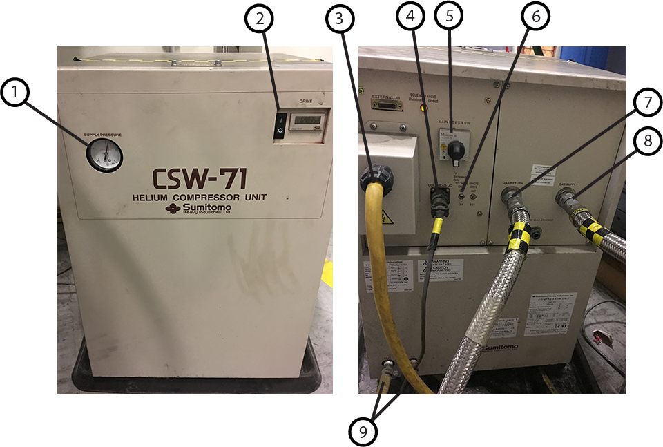
1 Supply pressure 2 Drive switch 3 Compressor power line 4 Coldhead power line 5 Main power switch 6 Coldhead drive switch 7 Helium return 8 Helium supply 9 Water lines - Toggle the coldhead drive switch to the ON position.
- Toggle the drive switch to the OFF position.
- After only 10 seconds, toggle the coldhead drive switch to the OFF position. Running the coldhead prevents pressure buildup in the coldhead.
- Turn the compressor's main power switch to the OFF position.
- Disconnect and lockout/tagout the input power to the compressor.
- Use a digital voltmeter or equivalent measuring device to make sure that no voltage is present.
- To prevent contamination of gas lines and the compressor, make sure the gas lines are removed immediately after power is disconnected.note: Do not put any bending force on Aeroquip fittings while connecting/disconnecting helium flexlines. A bending force will create difficulty in the rapid engagement/disengagement required to prevent helium loss and system contamination. Support the gas lines when connecting/disconnecting them to the compressor.
Figure 6. Burst disc bolt and washer assembly
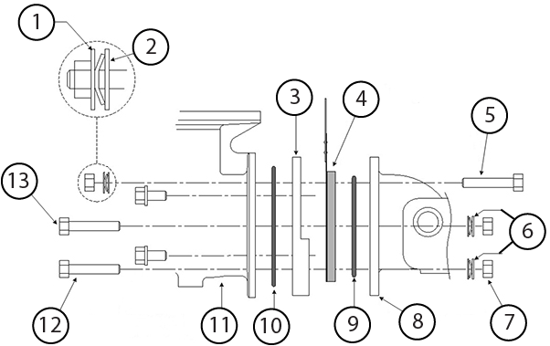
1 Flat washer 2 One Belleville washer, one flat washer, and one nut (orientation in 6 places) 3 Captured flange 4 Graphite burst disc 5 2 x 0.375 - 16 UNC x 1.625 inch hex head bolts, SS (4 Typ) 6 Flat washers 7 0.375 - 16 UNC nuts, SS (6 Typ) 8 Plenum casting 9 O-ring (46-281101P1) 10 O-ring (46-281101P8) 11 Vent adapter 12 2 x 0.375 - 16 UNC x 1.875 inch hex head bolts, SS 13 2 x 0.375 - 16 UNC x 1.625 inch hex head bolts, SS - MM3 Installation Manual Table
- Shield cooler gas lines (used in "Connecting the cryocooler electrical cables" and "Setting up the cryocooler")
- Connecting the power supply jumper cable steps
- Connect one twist connector lug of the power supply jumper cable to the power supply's positive (+) terminal. Make sure the twist connector is fully engaged.
Figure 7. Power supply jumper cable twist connectors

1 Male twist connector 2 Female twist connector with lug - Connect the other twist connector lug of the power supply jumper cable to the power supply's negative (-) terminal. Make sure the twist connector is fully engaged.
- Ramping steps, used in the "Ramping a magnet" SIS and "Ramping a magnet down to zero field" SIS
- Put on non-absorbent leather gloves that do not have any holes or tears.
- Set the Heater 1 main switch and Heater 2 shim axial switch on the front of the main power supply to O (Off).
- Remove LOTO and connect input power to the main power supply.
Figure 8. Superconducting main coil service power supply cabinet, manual power supply (P/N 46-260776G4), front (left) and rear (right)
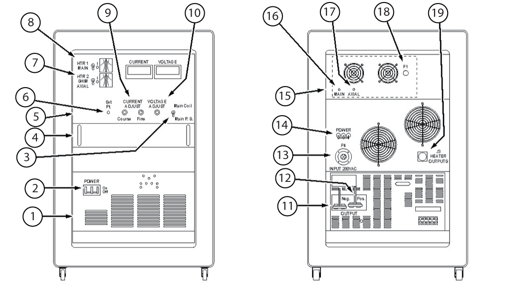
1 Main power supply 2 Power switch (CB2) 3 Voltmeter select 4 Utility drawer 5 Control panel 6 Current set point 7 Heater 2 shim axial current meter mechanical zero adjust 8 Heater 1 main current meter mechanical zero adjust 9 Current adjust (coarse/fine) 10 Voltage adjust 11 Negative main terminal (-) 12 Positive main terminal (+) 13 AC input (P4 feeder) 14 Main power (CB1) 15 Switch heater power supply 16 #1 current adjust (main) 17 #2 current adjust (axial) 18 Fuse F1 19 Heater outputs (J3) Figure 9. Auto ramp shim power supply power connections (P/N 5395802 or 5395802-100), front (left) and rear (right)
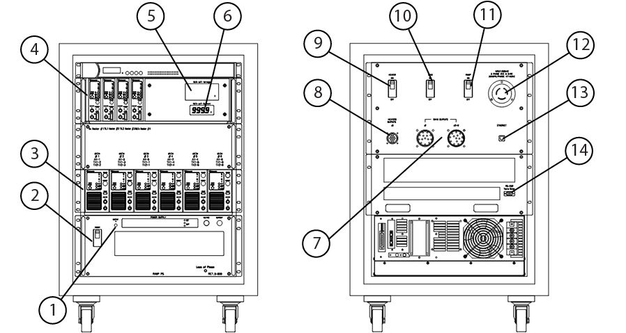
1 Output button 2 Main ramping power switch 3 Shim power supplies 4 Switch heaters 5 Main coil voltage display 6 Main coil current display 7 Shim outputs (J2 and J2-W) 8 Heater outputs (J3) 9 Heater switch 10 Shim power supply switch 11 Ramp power supply switch 12 AC input power 13 Ethernet port 14 Teslameter port (RS-232) - Disconnect and remove the power supply jumper cable from the power supply.Disconnecting the jumper cable removes the short across the power supply and enables magnet ramping up and down.
- Set the current adjustment and voltage controls for the main current to zero on the front of the supply.
- Before starting the Manual and Auto Ramp and Shim software, make sure of the following:
- The laptop computer is connected to the power supply with the Ethernet cable.
- The laptop computer is connected to a power source. Do not rely on battery power.
- The screen saver on the laptop computer is turned off.
- All power saver features on the laptop computer are turned off.
- The laptop computer language preference is set to English.
- There are no known computer issues that can cause the computer to hang or malfunction.
- There are no other programs open.
- The default Metrolab Teslameter baud rate for the PT2025 model is 2400. Refer to the Metrolab PT2025 Manual if you need to change the setting back to 2400.
- The teslameter is connected to the power supply with the DB9-DB25 RS232 cable.
- The teslameter is in the auto search mode with the units in tesla.
- Make sure the current adjust and voltage adjust controls on the front of the main power supply are OFF (fully counterclockwise).
Figure 10. Magnet polarity ramped normal

1 S pole (Z-) - patient end 2 Current 3 B field 4 N pole (Z+) - service end - Set the main power supply's main power and power on switches to ON.note: There are duplicate main power and power on switches on the front and back of the main power supply. Both need to be set to ON.
- Set the power supply's main heater switch, main shim switch, and ramping switch, which are located on the rear of the power supply, to ON.
- Double-click the Auto Ramp Shim icon on your laptop's desktop.
- When the System Configuration screen opens, complete the following substeps:
Figure 11. System Configuration screen
- In the Magnet Series field, enter .
- In the Serial Number field, enter .
- Make sure the He Vessel field is set to 0.
- Select Field from the Location list.
- Select from the Magnet configuration field.
- Select from the Magnet configuration field.
- Click Initialize the software.The Ramping and Shimming buttons are enabled.
- Click Manual & Auto Ramp Tool.The ramping-related tabs open in the software window.
- Click Test Communication.
Figure 12. Ramp Controls tab
note: The currents for the auto ramp shim supply (main heater, axial heater, tx1 heater, tx2 heater) on this screen are set by the software; do not change them.The software verifies communication with the power supply and the teslameter. The result of the test shows next to the Test Communication button. - Make sure the result of the test is PASS. If the teslameter communication check fails, you can proceed but in manual mode with the auto supply. If anything else fails you will need to troubleshoot before proceeding.
- Make sure the result of the test is PASS. If the test fails, you will need to troubleshoot before proceeding.
- In the Measurements area, make sure that the value in the Tesla Meter [T] field matches the Metrolab Teslameter.Matching teslameter values indicate proper communication between the laptop and the teslameter.
- Select the Ramp Controls tab.
- In the SET-ON-OFF area, click SET to set a maximum current point at . This value is prepopulated in the Current (A) field.
- In the Ramp followed by Park profiles area, enter the Recommended Site Parking Field value from the Field Report (ATR) in the Field2(T) cell of the last row in the table.
Figure 13. Field2(T) cell in the Ramp followed by Park profiles area
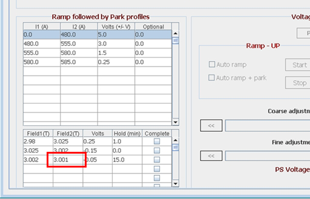
- In the Measurements area, make sure that the Main Coil [V] and Main Coil [A] voltage and current values are zero. If they are not, move Course adjustment and Fine adjustment sliders (in the Voltage Adjustment area) until the values are zero.
- In the SET-ON-OFF area, if Main Heaters is not set to OFF, move the slider to the OFF position.
- Make sure that the front of the power supply shows 0A.
- In the SET-ON-OFF area, move the Axial/B0 Heaters slider to the ON position.
- Observe the current rise in the Axial Heater Power Supply Ammeter (700 to 720 mA) to make sure of circuit continuity.
- To enable the ramp supply output, press the Output button on the front of the power supply.
Figure 14. Output button on the power supply
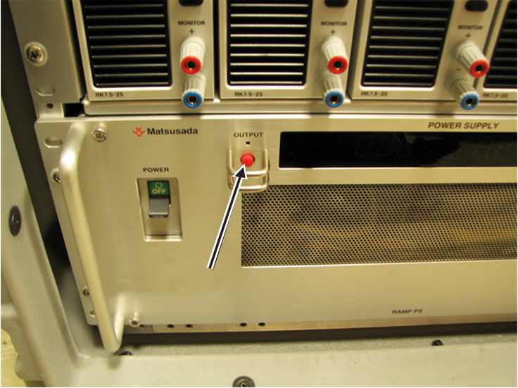
The supply will output power only if the red LED above the button is lit. - Connect a digital voltmeter (DVM) or equivalent measuring device to the end of the voltage sense leads.
- In the SET-ON-OFF area, make sure that the Axial/B0 Heaters slider is in the ON position.
- note: Only the last two digits on the teslameter should change as you turn the voltage adjust control. If the magnetic field strength decrease on the teslameter is any larger, the main coil switch is not persistent, in which case you must slowly adjust the voltage control to return to the magnet's parking field.If the difference between the base and center frequencies is +21.288 kHz, the main magnetic field base frequency requires a -21.288 kHz adjustment to match the desired center frequency.
- In the Voltage Adjustment area of the Ramp Controls tab, slowly adjust the Coarse adjustment and Fine Adjustment using the arrow buttons until the Main Coil [A] current value in the Measurements area reads through the main leads, main lead extensions, and persistent main switch.note: The current will not be delivered if the Axial/B0 Heaters slider is in the OFF position.
Figure 15. Voltage adjustment controls
- Set the current adjust coarse control on the power supply to maximum (fully clockwise).
- Monitor the digital current meter, and slowly turn the voltage control clockwise until the current display reads a main coil current of through the main lead extensions and persistent main switch.
- Make sure that the contact resistance voltage on the DVM is ≤ .note: Higher resistances add more heat to the magnet, increasing the boil-off and possibly causing a quench during ramping.
- If the DVM voltage exceeds the required level, perform one or both of the following:
- Wait approximately 1 minute with the current running. Readings may drop as the main lead extensions cool.
- Tighten the nuts (one flat at a time) on top of the hold-down tool to reduce contact resistance.
- If the reading still exceeds the required level, complete the following substeps:
- Turn the voltage and current adjust controls to zero (fully counterclockwise).
- Turn off the main power supply input power.
- Disconnect and LOTO input power to the main power supply. Use a DVM (or equivalent measuring device) to make sure that no voltage is present.
- Check and tighten the bolts securing the ramp cables to the power supply and main lead extensions.
- Remove LOTO and reconnect the input power to the power supply.
- If the reading still exceeds the required level, complete the following substeps:
- In the Voltage Adjustment area of the Ramp Controls tab, click the Coarse adjustment and Fine Adjustment arrow buttons until the Main Coil [V] and Main Coil [A] values in the Measurements area read zero.
- Turn off the main power supply input power.
- Disconnect and LOTO input power to the main power supply. Use a DVM (or equivalent measuring device) to make sure that no voltage is present.
- Check and tighten the bolts securing the ramp cables to the power supply and main lead extensions.
- Remove LOTO and reconnect the input power to the power supply.
- If the reading still exceeds the required level:
- Turn the voltage and current adjust controls to zero (fully counterclockwise).
- Turn off the main power supply input power.
- Disconnect and LOTO input power to the main power supply. Use a DVM (or equivalent measuring device) to make sure that no voltage is present.
- Disengage the hold-down tool.
- Reengage each main lead extension by raising it up to approximately 1 inch and lowering it back down.
- While pressing down, rotate each lead twice, approximately 15 degrees back and 15 degrees forth from the initial position.
- Repeat reengagement of each lead by raising it up to approximately 1 inch and lowering it back down.
- While pressing down, rotate each lead twice, approximately 15 degrees back and 15 degrees forth from the initial position.
- Reengage the hold-down tool.
- Remove LOTO and reconnect the input power to the power supply.
- If the reading still exceeds the required level:
- Set the voltage to zero.
- In the Voltage Adjustment area of the Ramp Controls tab, click the Coarse adjustment and Fine Adjustment arrow buttons until the Main Coil [A] current value in the Measurements area reads 0A.
- Turn off the main power supply input power.
- Disconnect and LOTO input power to the main power supply. Use a DVM (or equivalent measuring device) to make sure that no voltage is present.
- Disengage the hold-down tool.
- Reengage each main lead extension by raising it up to approximately 1 inch and lowering it back down.
- While pressing down, rotate each lead twice, approximately 15 degrees back and 15 degrees forth from the initial position.
- Repeat reengagement of each lead by raising it up to approximately 1 inch and lowering it back down.
- While pressing down, rotate each lead twice, approximately 15 degrees back and 15 degrees forth from the initial position.
- Reengage the hold-down tool.
- Remove LOTO and reconnect the input power to the power supply.
- If the contact resistance repeatedly fails, check the main leads and main lead extension contact bands for damage, and replace either the main leads or the contact bands if needed. For more information, see the following topic in this procedure: Preparing the main lead extensions. (If you click this link, you will need to use the waffle menu to return to this topic.)
- Do not proceed until the DVM voltage is within required values for ramping.
- Set the power supply's voltmeter select switch to the MAIN POWER SUPPLY position.The power supply displays the output at the output lugs.
- If the voltage is not < , repeat the previous steps in this procedure to decrease contact resistance.
- Do a check of the main power supply voltage. If the voltage is not < , repeat the previous steps in this procedure to decrease contact resistance.
- Turn the current adjust and voltage controls OFF (fully counterclockwise).
- Move the voltage sliders on the control screen to dial down the current and voltage.
- In the Measurements area, make sure that the Main Coil [V] and Main Coil [A] voltage and current values are zero.
- Get the latest final parking current.
- Make sure the DVM is connected to the voltage sense leads from the main lead extensions.note: This voltage approximates the main coil voltage, and will prevent the ramp down voltage from exceeding the recommended value.
- From the Main Heater menu, click ON and wait 3 minutes.
Figure 16. Turning the main heater on
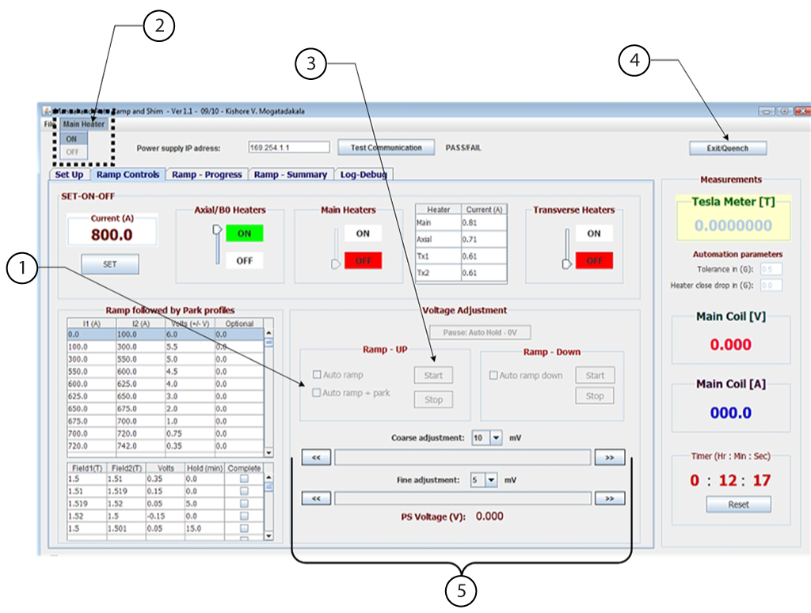
1 Auto ramp + park option 2 Main Heater menu 3 Ramp start and stop buttons 4 Exit/Quench button 5 Coarse and fine voltage adjustment buttons - From the Main Heater menu, click ON and wait 1 minute.
Figure 17. Turning the main heater on
1 Auto ramp + park option 2 Main Heater menu 3 Ramp start and stop buttons 4 Exit/Quench button 5 Coarse and fine voltage adjustment buttons - Make sure that the main heater turns on.
- Set the power supply's voltmeter select switch to MAIN COIL.
- Wait 5 minutes for the magnetic field to stabilize.
- Wait a minimum of 15 minutes for the main switch heater to fully cool and go persistent.
- Get the last main coil connection polarity.
Figure 18. Magnet polarity ramped normal
1 S pole (Z-) - patient end 2 Current 3 B field 4 N pole (Z+) - service end - Make sure that the main power supply is set to this polarity in the main coils.
- Monitor the power supply's digital voltage and current meters until they reach zero.A zero reading on the power supply's digital voltage and current meters indicates that the magnet is fully discharged.
- In the SET-ON-OFF area, move the Axial/B0 Heaters slider to the OFF position.
- Set the Heater 2 shim axial switch to O (Off).
- Set the main power and power on switches on the main power supply to OFF.
- Disconnect and LOTO input power to the main power supply. Use a DVM or equivalent measuring device to make sure that no voltage is present.
- Remove the ramp lead hold-down tool.
- Follow these substeps precisely in the order provided to remove one main lead extension at a time.
- If the magnet pressure is greater than 1.0 psig, open valve V2 to bring the pressure below 1.0 psig, and then close V2.note: Do not let the pressure go below .
- If ice causes a blockage that prevents the gas from exiting the leads, use a nonferrous tool such as a tie wrap to remove all ice around the ramp lead port compression fitting on the main lead extension that you are removing first.
Figure 19. Ice buildup on the ramp leads
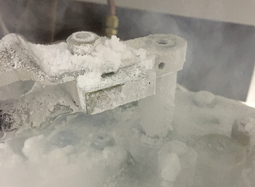
- Unscrew the ramp lead port compression fitting and remove the first main lead extension from the magnet. Immediately replace the cap on the ramp port.
- Remove all ice around the ramp lead port compression fitting on the other main lead extension.
- Unscrew the ramp lead port compression fitting and remove the second main lead extension from the magnet. Immediately replace the cap on the ramp port.
- Check the main leads and helium fill port cap for leaks.note: When you put the caps back on, everything is cold. Any moisture present can freeze and cause the caps to stick, preventing you from turning them the number of turns they can normally go, which can cause leaks through the cap threads.
- Apply tape to the cap chains to prevent spike noise (white pixels).
These substeps prevent an excessive heat load on the magnet cartridge and a possible quench. - If the magnet pressure is greater than 1.0 psig, open valve V2 to bring the pressure below 1.0 psig, and then close V2.
- Disconnect the power supply jumper cable.
- To maintain healthy pressure and temperature after ramping:
- Do a check that no leaks are present in the helium exhaust system or vent valve V2.
- Magnet electrical check steps
- Locate the instrumentation connector assembly.
Figure 20. Instrumentation connector assembly
- NOTE: The magnet rundown unit (MRU) uses a different instrumentation connector assembly than the one above - mainly the connections refere to J303 instead of J3. this image applies to both Active and Passive content.
Figure 21. Instrumentation connector assembly
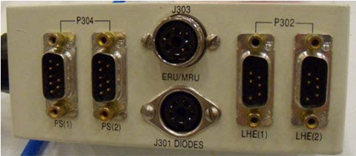
- Use a digital multimeter to measure the resistance across the identified connector pins.
Figure 22. Magnet pinouts for instrumentation connector assembly, P403 helium level sensor and pressure control heater
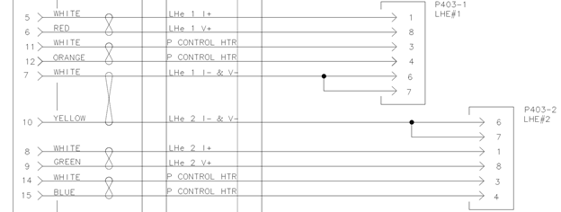
- Report any reading that is outside of the acceptable range to the Regional Magnet and Cryogen (MAC) Team Leader or the Magnet Support Team at the Online Center for future investigation before ramping the magnet.
- Reusable ramping steps
- Replacing the cable busbars
- Inspect the rubber bushings as follows:
- Make sure they are installed correctly (smaller side faces out) on each mounting stud.
- Make sure the coil-side mating surface is clean and has no epoxy on it.
- Replace damaged bushings.
Figure 23. Z busbar rubber bushing mounting locations (3TLC magnet)
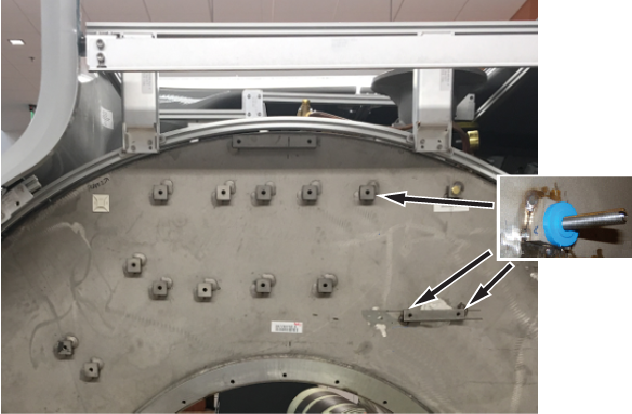
Figure 24. Z busbar rubber bushing mounting locations (G3 magnet)
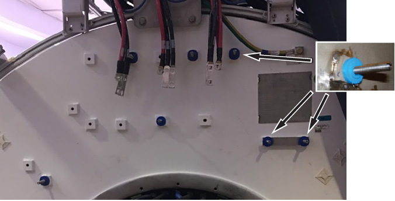
Figure 25. YX busbar rubber bushing mounting locations (3TLC magnet)
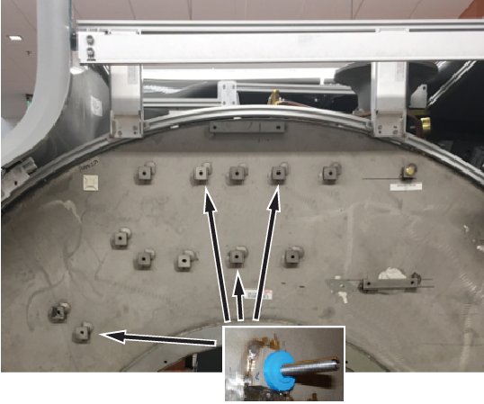
Figure 26. YX busbar rubber bushing mounting locations (G3 magnet)
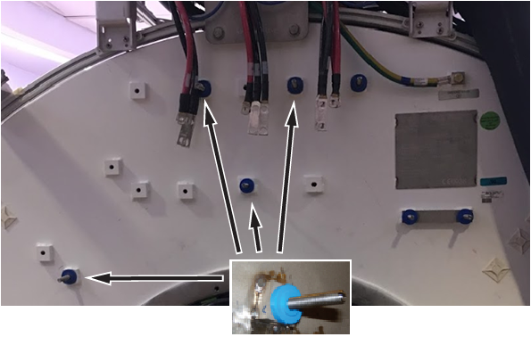
note:- Before installing the replacement busbar, inspect the surface that will connect the gradient coil and cables for oxidation. If the surface is oxidized, clean the surface with a light abrasive pad.
- DO NOT lift the busbar assembly by holding the leads.
- Clean the magnet mounting stud threads with a non-magnetic brush to remove any remnants of thread-lock material.
- Hand thread a clean M10 nut onto the stud and check that the nut rotates freely. The thread should be free of high friction or locking spots.Wipe the studs and the gradient coil terminals clean with alcohol to assure particle and dust removal.
- Insert the rubber bushings onto each mounting stud.
- Apply Loctite #243 (approximately 1 or 2 drops) to the exposed threads of each mounting stud.
- Starting at the top and moving clockwise between mounting studs, install and hand-tighten a brass nut with G10 washer evenly on each stud. Tighten each nut 1/2 turn at a time until 2-3 threads show above each nut.
- Align the V groove of the lugs with the gradient coil terminal so that the lug is flush with the terminal.
Figure 27. Lug V groove orientation on the terminal
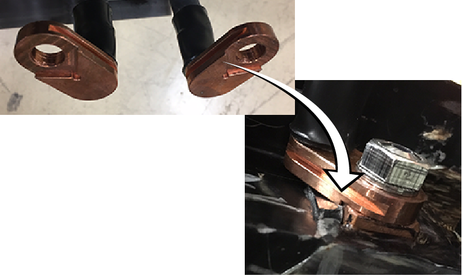
Figure 28. Installation of busbar cables to the gradient coil
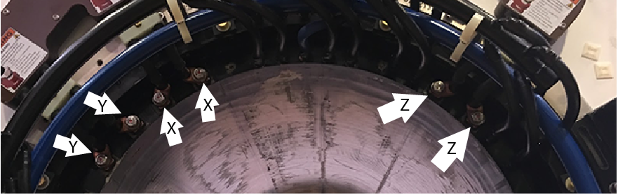
- Prepare SmartBolts as needed by placing a new Nord-Lock washer over each M12 x 30 SmartBolt.
- Clear the area between the busbar lugs and copper end rings of all debris.
- Using the adjustable nonmagnetic torque wrench (5534134), set the torque to 25 ft-lbs or 33.9 Nm. Tighten the nuts until the wrench clicks.note: Make sure that the arrow on the torque wrench is visible. If the arrow is not visible, the torque wrench will not “click” when the proper torque is reached.
Figure 29. Arrow on non-magnetic torque wrench

- note:
- Always make sure that the stud extends beyond the end of the nut.
- Correct torque to the nuts holding the busbar lugs is critical to the long-term stability of the gradient subsystem.
note:- Do not lift the busbar assembly by holding the leads.
- Make sure the bushings remain on each mounting stud.
- Install the busbar terminal lugs to the HRMw gradient coil terminal using the SmartBolts with the new Nord-Lock washer and Loctite.
Figure 30. YX HMRw gradient busbar terminals
Figure 31. Z HMRw gradient busbar terminals
- Tighten the M12 x 30 SmartBolt with your fingers. Discard the old washers.note:
- When installing the SmartBolt, be careful not to let the hardware fall into the magnet.
- Always use the new Nord-Lock washers that come with the FRU package. DO NOT reuse the old Nord-Lock washers.
- Nord-Lock washers consist of two pieces, which are generally glued together. Always use a complete set with two pieces joined together in correct orientation. DO NOT use a separated single piece.
Figure 32. Nord-Lock Washers

- Using the nonmagnetic 80 Nm fixed torque wrench (5790177), torque the SmartBolt in the direction of the arrow until the wrench clicks.
Figure 33. Arrow on Non-magnetic Torque Wrench
- Make sure the window in the top of the SmartBolt is black. If it is not black, re-torque using the nonmagnetic 80 Nm fixed torque wrench.note: When the SmartBolt is red, it is loose. Image shows right side SmartBolt black, left side red.
Figure 34. SmartBolts indicate tightness
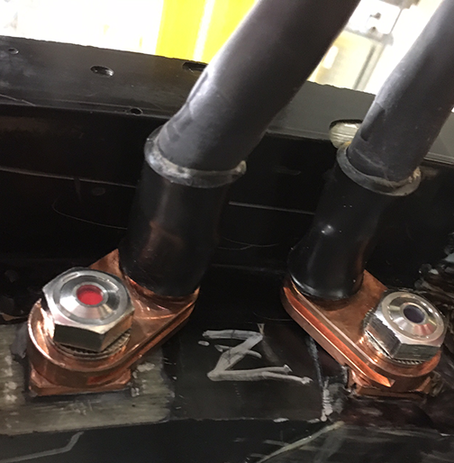
- Using a permanent marker, place a line from the base of the stud to the nut. Do this for all stainless steel flanged nuts.
- Perform a second torque operation at each nut to confirm the proper torque of the nut.
- If the nut moved more than one flat from the original position, you must re-torque the nut a third time.
- If re-torqueing was required, re-mark the line on the nut and stud.
- Install and secure the safety covers.
- Inspect the flame-retardant material (white cloth) for tears or internal damage. Replace safety cover if liner is damaged. See FRU list for part number.
- Ensure the flame-retardant material (white cloth) is folded out around the edges of the safety cover. There should be no openings between the safety cover and the gradient coil.
- Install the safety cover assembly over the Z gradient terminals as shown below.
Figure 35. Locations of safety covers to be installed
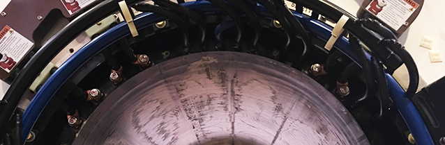
- Install the safety cover assembly over the YX gradient terminals as shown below.
Figure 36. Locations of safety covers to be installed
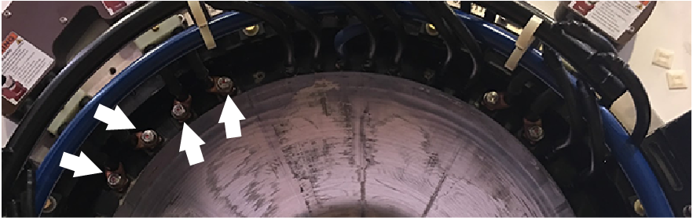
Figure 37. Align the safety cover with inside stud
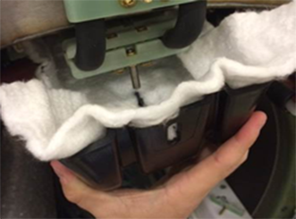
- Rotate the safety cover upward so that both studs protrude through the cover. Use caution when moving the cover to ensure that the white filler material does not tear.
Figure 38. Rotate safety cover
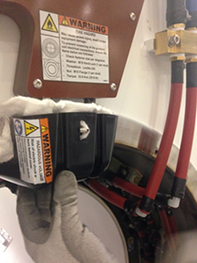
note: Check and confirm that the flame-retardant material (white cloth) is between the gradient coil FR4 terminal block and the safety cover. There should not be any gaps between the safety cover and the gradient coil.
- Apply Loctite and install the nut as follows:
- Discard the old nut and use the new brass nylon insert nut from the busbar replacement kit.
- Place the G10 washer 5534978 on the front terminal stud.
- Apply one drop of Loctite 243 to either the nut or the threads (not both) of the front terminal stud.
- Place the brass hex nut on the outer stud, and tighten it with your fingers.
- Repeat this process for the inner stud.
Figure 39. Apply loctite and install nut
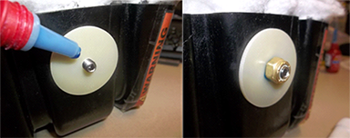
- Push lightly on the front cover and first, lightly tighten the inner hex lock nut with 7/16 open end wrench. Then lightly tighten the front hex lock nut with a 7/16 inch wrench. Tighten nuts alternating between front and inside nut until both are tight. The stainless steel stud edge should align or protrude from the nylon insert outside surface.note: Make sure the white flame-retardant (white cloth) is between the gradient coil FR4 terminal block and the black injection molded plastic cover.
- Repeat these steps to install the safety cover on the XZ busbar cable terminal studs 3 and 4, 5 and 6 as shown on Figure 35.
- At the top of the busbar (after applying system cables), install new Nord-Lock washers, and then install brass nuts onto the studs of busbar.note:
- The cables must be installed back-to-back.
- The busbar studs are captured in the phenolic board. They can wriggle, but must not rotate freely.
Figure 40. Secure the gradient cables at the top of the busbar
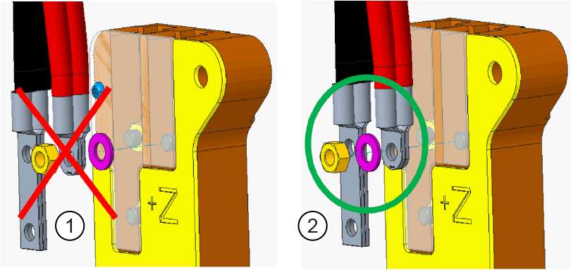
Item Description 1 Incorrect 2 Correct - Use the 80 Nm torque wrench to tighten the nuts on the top of the busbar until the wrench clicks.
- At the top of the busbar, install plastic cover with two screws to the busbar.
Figure 41. Installation of terminal
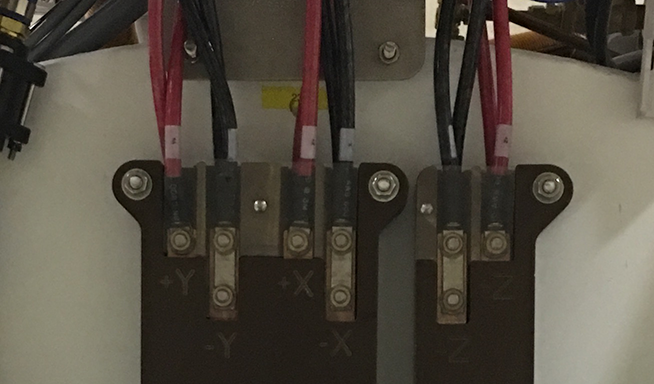
- Replacing the HRMw gradient coil
- Position the jack assembly housing in the cart with the notch over the plate in the cart.
Figure 42. Jack assembly placement
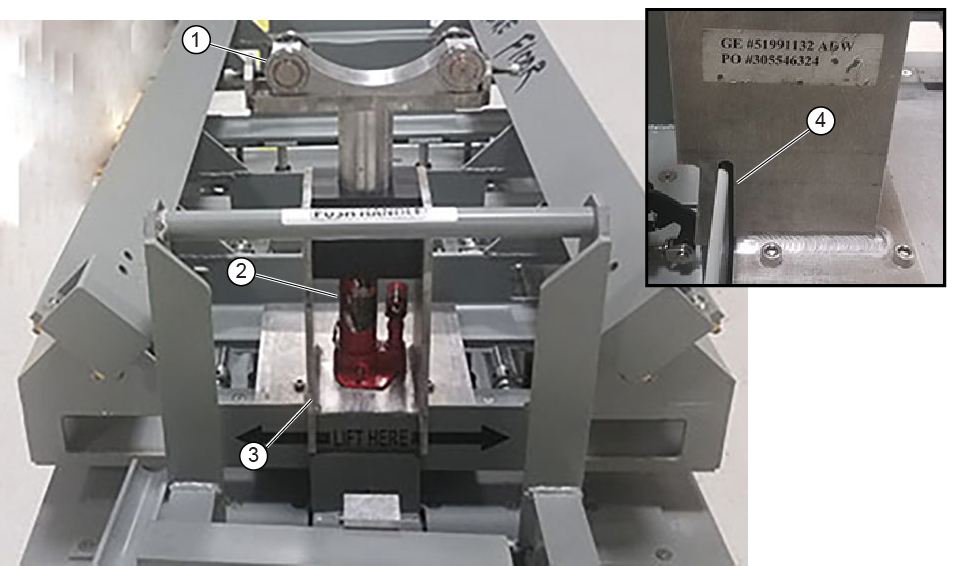
- Raise the jack about 2 inches (50 mm) and position the jack assembly (5191132) in the housing. Position the cradle on the jack.
- Move the cart to the patient end of the magnet, and position it in front of the magnet with at least a 2 inch (50.8 mm) gap between the cart and the magnet interface ring (required for lower wedge removal).
Figure 43. 2-inch gap between cart and magnet

- Center the cart left-to-right with respect to the magnet bore.
- Release the hand lever on the cart handle to set the brakes. This will keep the cart from moving after the cart is aligned with the bore.
- Raise or lower the cradle of the cart as required to vertically align the tube support plate at the magnet and the gradient mounting plates at the gradient coil.
Figure 44. Adjusting height of cart

- Slide the male insertion tube through the tube guide roller assemblies at both sides of the gradient coil. Make sure the end with the standoff and pilot shaft points towards the magnet.
Figure 45. Setting up insertion tube assembly
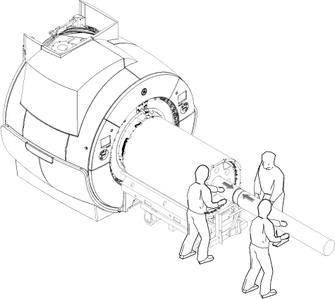
- With one person holding the male insertion tube to keep it from rolling, two people should obtain the female insertion tube from the shipping crate and thread the two tubes together.
- Push the complete insertion tube assembly into the magnet bore. Get the tube pilot shaft as close to, but not touching, the tube support plate as possible.
Figure 46. Complete insertion tube assembly

Figure 47. Roller assembly and mounting plates
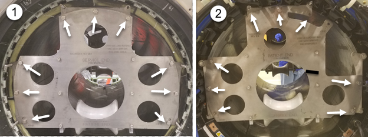
- Attach two adapter plates (5338223) to the gradient coil patient end at the 3 and 9 o'clock positions with M10 x 20 mm bolts and M10 nuts.
- Attach adapter plate (5338224) to the gradient coil patient end at the 12 o'clock position with M10 x 20 mm bolts and M10 nuts.
Figure 48. Adapter plate on gradient coil - patient end
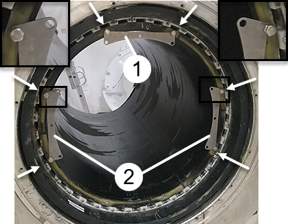
- On the service end of the magnet, attach two adapter plates (5338223) to the gradient coil service end at the 4 and 8 o'clock positions with M10 x 20 mm bolts and M10 nuts.
- Attach adapter plate (5338224) to the gradient coil service end at the 12 o'clock position with M10 x 20 mm bolts and M10 nuts.
- Attach the supply and return hoses to the heat exchanger. The supply hose has fittings on both ends and connects to the upper most fitting on the heat exchanger. Tighten the fittings securely.
Figure 49. Attach the hoses
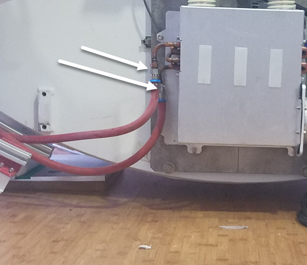
- Pressurizing the magnet with helium gas to 4 psig - steps used in "Replacing a Burst Disc", "Doing a System Leak Test", and "Replacing the Instrumentation Lead Assembly"
- Connect the two red power cables to the positive (+) busbar and the two black power cables to the negative (-) busbar on the main power supply, and the switch heater cable to the , as shown below.
Figure 50. Magnet power supply connections
1 Negative (black) main power cables (46-260723G2) 2 Positive (red) main power cables (46-260723G12) 3 Grounding cable 4 5 6 To magnet foot grounding stud 7 To magnet These parallel connections provide a 1,000 amp power supply. - If a magnet fill is not immediately scheduled at burst disc replacement, complete the following substeps to pressurize the magnet with helium gas to 4 psig.note: A pressure of 4 psig is required to continue on with the magnet leak check.

- notice
- Connect the flexible helium gas hose to the nonmagnetic gas cylinder regulator on a helium gas cylinder of 99.9995% helium gas (GHe).
- Remove the 0.5 inch NPT/V3 plug from the NPT/V3 plumbing.
- Open the helium gas cylinder and let gas flow out of the hose for 10 to 15 seconds.
- Connect the flexible helium gas hose's 0.5 inch NPT/V3 fitting to the NPT/V3 port.
- Open the helium gas cylinder's valve and pressurize the magnet to 4 psig.
- When the magnet pressure reading reaches 4 psig, turn off the gas flow.
- Disconnect the flexible helium gas hose from the magnet.
- Put the 0.5 inch NPT/V3 plug back on the NPT/V3 plumbing.
Figure 51. Equipment setup for a temporary helium gas pressurization, current plumbing assembly (top) and legacy plumbing assembly (bottom)
1 Helium gas (99.9995%) 2 Helium gas cylinder's valve 3 Nonmagnetic gas cylinder regulator 4 0.5 inch NPT/V3 plug (removed from the NPT/V3 port) 5 Flexible helium gas hose 6 0.5 inch NPT/V3 fitting 7 NPT/V3 note:The image above is representative of the plumbing in a system that has been upgraded. Plumbing in a new magnet is slightly different in appearance as shown below.
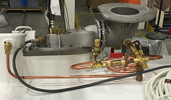
- BIOS
- Start the BIOS utility by turning on or restarting the computer and pressing the F10 key (or ESC, then F10 key) when Press F10 to enter setup is displayed in the lower left screen.
- Gradient coil removal and installation steps
- On the service end of the magnet, install eight (UA/3TLC) or six (G3/W-WB) M10 x 280 stainless steel studs (5766679) at the locations indicated.
Figure 52. M10 studs for support plate spacers (service end)
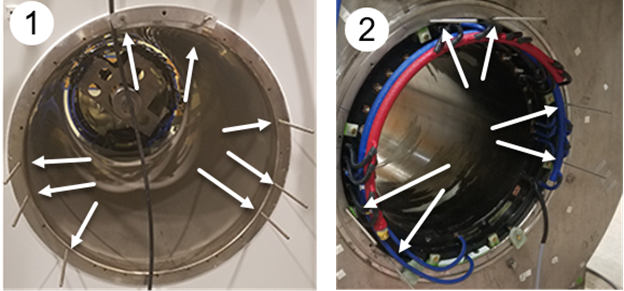
- Position the top tube support plate spacer (5729471) at the 12 o'clock position.
Figure 53. 12 o'clock support plate spacer installation (UA/3TLC shown)
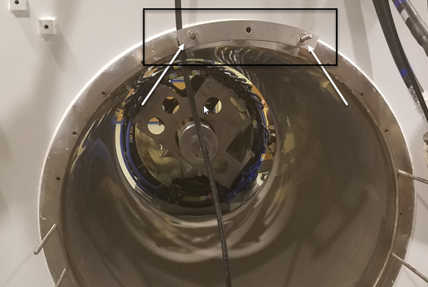
- Confirm the spacers are on the correct side of the tube support assembly (2, 4) (5 is optional). If necessary, move the tube support plate spacers to the outside face.
Figure 54. Attaching tube support plate (UA/3TLC shown)
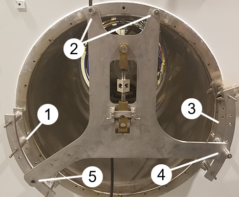
1 8 o'clock spacer (5729022) 2 12 o'clock spacer (5766679) 3 4 o'clock spacer (5729022) 4 4 o'clock attachment 5 8 o'clock attachment (spacer is optional, use a M12 x 35 bolt without spacer, M10 x 80 bolt with spacer) - Attach a tube support plate spacer (5729022) on the studs at the 4 o'clock (3) and 8 o'clock (1) positions and secure with M10 nuts.
- Position the tube support plate assembly (2284928-2) on the spacers using the studs.
- Secure the top with two M10 nuts (2),
- Secure the right side (3) with an M10 nut.
- On the left side (5), if the tube support spacer is used, attach using M10 x 80 bolt and nuts. If the tube support spacer is not used, attach using an M12 x 35 bolt and nut.
- Adjust the tube support plate horizontally with the adjustment screws until the tube support bearing is centered left-to-right.
Figure 55. Adjusting support plate
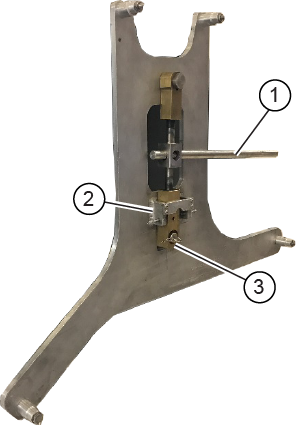
1 Vertical adjustment lever 2 Horizontal adjustment screw 3 Support bearing - Obtain the male insertion tube (2284929), tube standoff (5729027), additional tube standoff (5191626), and tube pilot.
- Position the tube standoff on the male insertion tube and secure with four SCHS 3/8 x 16 x 1.5 inch Hex Socket Screws.
- Position the additional tube standoff on the tube standoff and secure with four SCHS 3/8-16 x 4 inch screws.
- Position the tube pilot on the additional tube standoff and secure with fourSCHS 3/8 x 16 x 1.25 inch Screws.
Figure 56. Attaching standoff to insertion tube
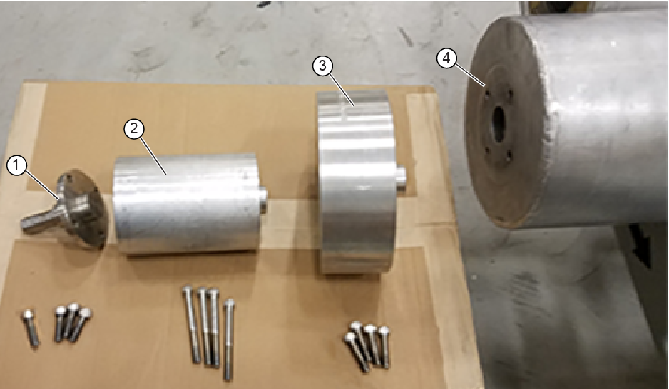
1 Male insertion tube (2284929) 2 Tube standoff (5729027) 3 Installation tube standoff (5191626) 4 Tube pilot 1 GCU supply (GC SEC SPY) 2 GCU return (GC SEC RTN) - If the recondenser does not return to usual operation, continue to the next level of deicing.
- Turn off the cryocooler to prevent ice migration into the recondenser:
- Toggle the coldhead drive switch to the ON position.
- Toggle the drive switch to the OFF position.
- After only 10 seconds, toggle the coldhead drive switch to the OFF position. Running the coldhead prevents pressure buildup in the coldhead.
- Turn the compressor's main power switch to the OFF position.
- Disconnect and lockout/tagout the input power to the compressor.
- Use a digital voltmeter or equivalent measuring device to make sure that no voltage is present.
Figure 57. F-50 helium compressor unit, front
1 Water lines 2 Coldhead power line 3 Coldhead drive switch 4 Compressor power line 5 Main power switch 6 Helium supply 7 Helium return 8 Drive switch 9 Supply pressure 10 Return pressure
- Bridge Screws
Figure 58. Fixed table rear bridge bottom screws
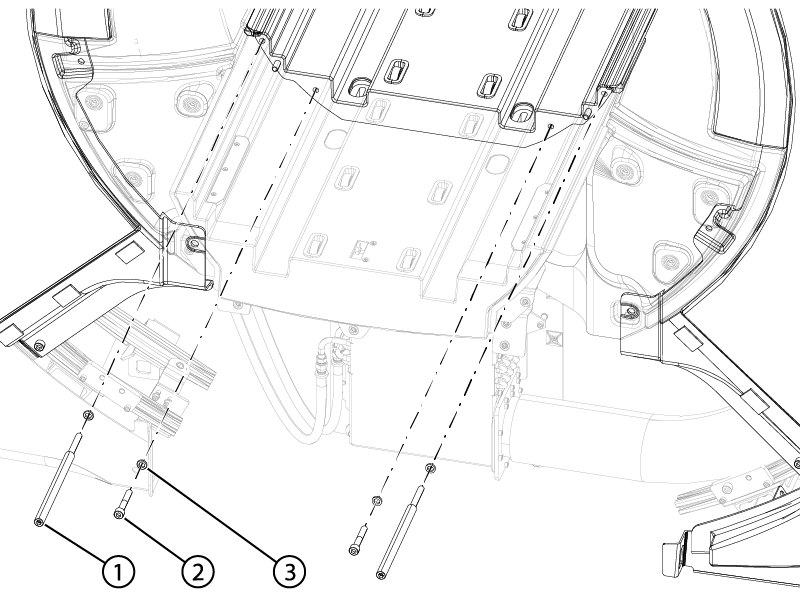
1 Extended fastener 2 Screw 3 Washer Figure 59. Front bridge screws
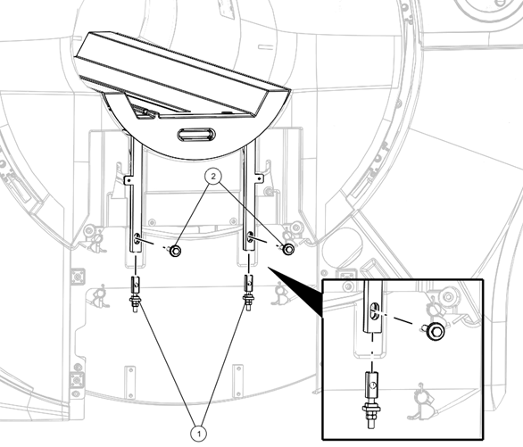
1 Adjuster 2 Screws - LVShim
- On the LVShim user interface, click Scan.note: To abort the scan, click Abort or press the Stop Scan button on the control panel.note:
During LVShim procedures, the system performs an SNR check to verify system integrity. If the SNR check fails, troubleshoot the SNR issue (in particular, check the I and Q drive cable connections) before continuing with LVShim.
Figure 60. Starting a scan

After the scan is completed, the tool calculates the harmonics and compares them with the specifications.
- Green cell = Passed specification
- Red cell = Failed specification
Figure 61. Harmonics and specifications comparison
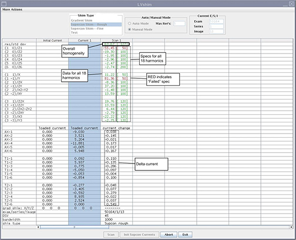
The tool calculates the delta currents and the new currents, and displays currents in a pop-up dialogue.
Figure 62. Currents displayed

- Accept or decline the new currents:
- If all harmonics data cells are green, decline the new currents by clicking Cancel.
-
If any harmonics data cells are red, click Dial in Currents to accept the new currents.
The new currents will be displayed in a new column in this window. Dial in the currents from the new Loaded Current column using the Supercon Shim power supply. See the applicable Magnet and Cryogens Subsystem Manual for information about dialing in the currents.
Figure 63. Second iteration of LVShim

note: If the current is not accepted, the delta currents in the LVShim user interface change to purple and the new Loaded Current column is not displayed. - The objective is to further improve and tune the homogeneity as compared to LVShim Rough.Use the three-piece LVShim phantom. The LVShim Fine process is done with a sampling diameter of 45 cm DSV.The objective is to improve the homogeneity to a point where Grafidy and other calibrations can be done.The objective is to complete fine tuning of the homogeneity of the magnet.The Gradshim process is done with a sampling diameter of 22 cm DSV and the same bandwidth as LVShim Fine, which depends on the quality (good/bad) of the fine tuning. Once the scan passes and all harmonics are within specification, the magnetic field is reanalyzed in Test mode automatically at 45 DSV for customer acceptance.
The gradshim process includes LVShim - test. The objective of this test is to analyze completed scans at 45 DSV without calculating currents.
note: Use the Supercon Shim power supply to dial correction currents into superconductive correction coils.note: The gradient shim bit resolution was increased by 16 times. This will result in gradient current values that are much higher than those observed in previous versions of this tool. - Setting up the LakeShore 325 temperature controller to read diodes from inputs
The "Setting up the LakeShore 325 temperature controller to read diodes from inputs" is a stand-alone topic (topic ID 2010896). The steps from that topic were added here and conref'd to the Deicing the Level 1 Recondenser (topic ID 2010558) topic, per Hii Review feedback.
The steps below are not complete and should not be used as-is; only some are used in the Deicing the Level 1 Recondenser (topic ID 2010558) topic.
- Make sure the LakeShore 325 Temperature Controller is powered on and the deicing cable is connected.
- Press Input Setup (7) on the front panel.
- Use the ▲ and ▼ buttons to select Input Setup: Input A and press Enter.
- Use the ▲ and ▼ buttons to select Type: Silicon Diode and press Enter.
- Use the ▲ and ▼ buttons to select Curve 01: DT-470 and press Enter.
- Repeat steps 152 through 155 for Input B.
- The Input A and Input B diode readings should appear on the front panel display.
Figure 64. LakeShore 325 temperature controller - front view
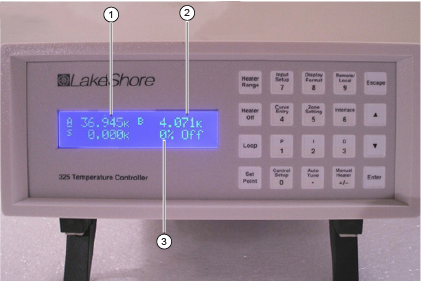
1 Value should remain below 150 K during deicing process 2 Value should increase at high rate when heater is on 3 Value should indicate 50% On when heater is activated
Finalization
bBusbar Finalization
- Install the rear end bell enclosure. Refer to Installing the rear endbell.
- Install the patient bridge. Refer to Installing the rear bridge.
- Remove LOTO from the ISC. Refer to Removing LOTO - ISC.
- Do the DQA II calibration to verify proper geometry. Refer to Doing DQA calibration.
- Do the EPI White Pixel test to analyze raw data for white pixel artifacts.